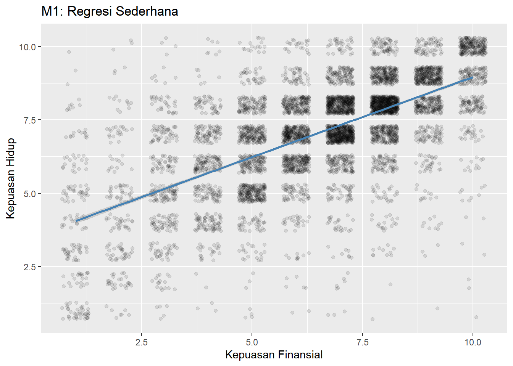
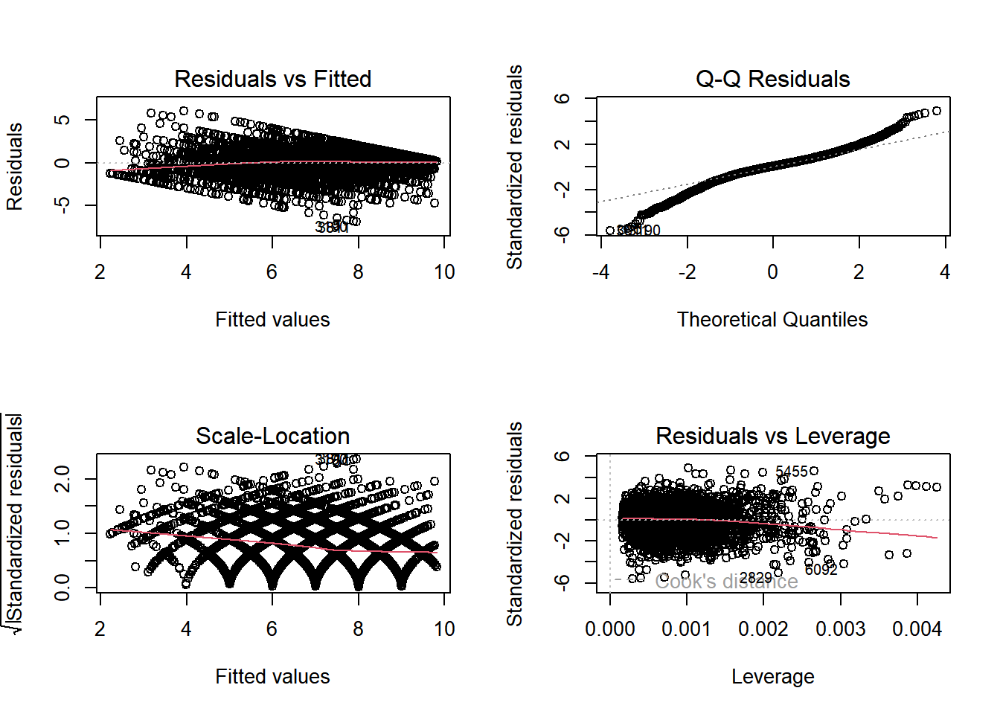
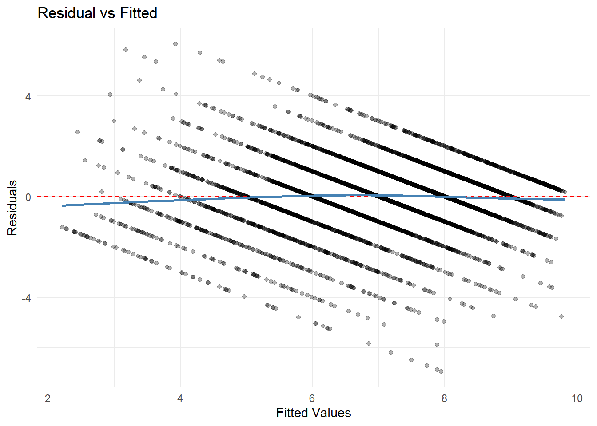

library(tidyverse)
library(broom)
library(car)
library(knitr)Sesi 2: Analisis Regresi
ISEI Workshop: Analisis Regresi & SEM dengan RStudio
1. Persiapan
2. Import & Pembersihan Data
wvs <- read_csv("data/wvs1.csv")
dat <- wvs |>
select(kepuasan_hidup, kebebasan_memilih, kepuasan_finansial, usia,
religiusitas, jenis_kelamin, negara) |>
drop_na()
nrow(dat)[1] 69223. Regresi Linear Sederhana (M1)
\[\text{kepuasan\_hidup} = \beta_0 + \beta_1 \cdot \text{kepuasan\_finansial} + \varepsilon\]
m1 <- lm(kepuasan_hidup ~ kepuasan_finansial, data = dat)
tidy(m1)# A tibble: 2 × 5
term estimate std.error statistic p.value
<chr> <dbl> <dbl> <dbl> <dbl>
1 (Intercept) 3.51 0.0535 65.7 0
2 kepuasan_finansial 0.545 0.00772 70.6 0glance(m1) |> select(r.squared, adj.r.squared, AIC)# A tibble: 1 × 3
r.squared adj.r.squared AIC
<dbl> <dbl> <dbl>
1 0.419 0.419 24222.Visualisasi M1
ggplot(dat, aes(x = kepuasan_finansial, y = kepuasan_hidup)) +
geom_jitter(alpha = 0.1, width = 0.3, height = 0.3) +
geom_smooth(method = "lm", color = "steelblue") +
labs(title = "M1: Regresi Sederhana",
x = "Kepuasan Finansial", y = "Kepuasan Hidup")
4. Regresi Linear Berganda (M2)
m2 <- lm(kepuasan_hidup ~ kepuasan_finansial + kebebasan_memilih,
data = dat)
tidy(m2)# A tibble: 3 × 5
term estimate std.error statistic p.value
<chr> <dbl> <dbl> <dbl> <dbl>
1 (Intercept) 1.71 0.0648 26.3 8.78e-146
2 kepuasan_finansial 0.388 0.00788 49.2 0
3 kebebasan_memilih 0.388 0.00940 41.3 0 5. Regresi Berganda Penuh (M3)
m3 <- lm(kepuasan_hidup ~ kepuasan_finansial + kebebasan_memilih +
religiusitas + usia, data = dat)
tidy(m3)# A tibble: 5 × 5
term estimate std.error statistic p.value
<chr> <dbl> <dbl> <dbl> <dbl>
1 (Intercept) 1.31 0.0781 16.8 3.07e-62
2 kepuasan_finansial 0.379 0.00792 47.9 0
3 kebebasan_memilih 0.389 0.00935 41.6 0
4 religiusitas 0.0323 0.00578 5.59 2.39e- 8
5 usia 0.00569 0.000894 6.37 2.02e-106. Regresi dengan Variabel Kategorikal (M4)
dat <- dat |>
mutate(
jenis_kelamin = factor(jenis_kelamin),
negara = factor(negara)
)
m4 <- lm(kepuasan_hidup ~ kepuasan_finansial + kebebasan_memilih +
religiusitas + usia + jenis_kelamin, data = dat)
tidy(m4)# A tibble: 6 × 5
term estimate std.error statistic p.value
<chr> <dbl> <dbl> <dbl> <dbl>
1 (Intercept) 1.29 0.0797 16.2 4.45e-58
2 kepuasan_finansial 0.379 0.00792 47.9 0
3 kebebasan_memilih 0.389 0.00935 41.6 0
4 religiusitas 0.0319 0.00579 5.50 3.83e- 8
5 usia 0.00578 0.000896 6.45 1.19e-10
6 jenis_kelaminPerempuan 0.0403 0.0299 1.35 1.78e- 17. Model dengan Negara (M5)
m5 <- lm(kepuasan_hidup ~ kepuasan_finansial + kebebasan_memilih +
religiusitas + usia + jenis_kelamin + negara, data = dat)
tidy(m5) |> kable(digits = 3)| term | estimate | std.error | statistic | p.value |
|---|---|---|---|---|
| (Intercept) | 1.256 | 0.081 | 15.541 | 0.000 |
| kepuasan_finansial | 0.377 | 0.008 | 47.548 | 0.000 |
| kebebasan_memilih | 0.394 | 0.009 | 41.623 | 0.000 |
| religiusitas | 0.028 | 0.006 | 4.679 | 0.000 |
| usia | 0.005 | 0.001 | 5.781 | 0.000 |
| jenis_kelaminPerempuan | 0.031 | 0.030 | 1.028 | 0.304 |
| negaraSelandia Baru | 0.151 | 0.046 | 3.275 | 0.001 |
| negaraSingapura | 0.156 | 0.035 | 4.427 | 0.000 |
8. Model dengan Interaksi (M6)
m6 <- lm(kepuasan_hidup ~ kepuasan_finansial * jenis_kelamin +
kebebasan_memilih + religiusitas + usia, data = dat)
tidy(m6) |> kable(digits = 3)| term | estimate | std.error | statistic | p.value |
|---|---|---|---|---|
| (Intercept) | 1.198 | 0.092 | 13.075 | 0.000 |
| kepuasan_finansial | 0.394 | 0.011 | 37.055 | 0.000 |
| jenis_kelaminPerempuan | 0.231 | 0.095 | 2.418 | 0.016 |
| kebebasan_memilih | 0.388 | 0.009 | 41.504 | 0.000 |
| religiusitas | 0.032 | 0.006 | 5.488 | 0.000 |
| usia | 0.006 | 0.001 | 6.469 | 0.000 |
| kepuasan_finansial:jenis_kelaminPerempuan | -0.029 | 0.014 | -2.101 | 0.036 |
9. Perbandingan Model
ANOVA
anova(m1, m2, m3)Analysis of Variance Table
Model 1: kepuasan_hidup ~ kepuasan_finansial
Model 2: kepuasan_hidup ~ kepuasan_finansial + kebebasan_memilih
Model 3: kepuasan_hidup ~ kepuasan_finansial + kebebasan_memilih + religiusitas +
usia
Res.Df RSS Df Sum of Sq F Pr(>F)
1 6920 13399
2 6919 10750 1 2648.89 1724.066 < 2.2e-16 ***
3 6917 10627 2 122.78 39.956 < 2.2e-16 ***
---
Signif. codes: 0 '***' 0.001 '**' 0.01 '*' 0.05 '.' 0.1 ' ' 1Tabel Perbandingan
tibble(
Model = paste0("m", 1:6),
R2_adj = c(glance(m1)$adj.r.squared, glance(m2)$adj.r.squared,
glance(m3)$adj.r.squared, glance(m4)$adj.r.squared,
glance(m5)$adj.r.squared, glance(m6)$adj.r.squared),
AIC = c(AIC(m1), AIC(m2), AIC(m3), AIC(m4), AIC(m5), AIC(m6))
) |> kable(digits = 3)| Model | R2_adj | AIC |
|---|---|---|
| m1 | 0.419 | 24221.64 |
| m2 | 0.534 | 22698.99 |
| m3 | 0.539 | 22623.47 |
| m4 | 0.539 | 22623.65 |
| m5 | 0.540 | 22602.88 |
| m6 | 0.539 | 22621.24 |
10. Diagnostik Model
Diagnostic Plots
par(mfrow = c(2, 2))
plot(m3)
VIF (Variance Inflation Factor)
vif(m3)kepuasan_finansial kebebasan_memilih religiusitas usia
1.328704 1.301577 1.012549 1.036567 Residual vs Fitted (ggplot)
ggplot(augment(m3), aes(x = .fitted, y = .resid)) +
geom_point(alpha = 0.3) +
geom_hline(yintercept = 0, linetype = "dashed", color = "red") +
geom_smooth(se = FALSE, color = "steelblue") +
labs(title = "Residual vs Fitted", x = "Fitted Values", y = "Residuals") +
theme_minimal()
11. Standardized Coefficients
dat_scaled <- dat |>
mutate(across(where(is.numeric), scale))
m3_std <- lm(kepuasan_hidup ~ kepuasan_finansial + kebebasan_memilih +
religiusitas + usia, data = dat_scaled)
tidy(m3_std) |> kable(digits = 3)| term | estimate | std.error | statistic | p.value |
|---|---|---|---|---|
| (Intercept) | 0.000 | 0.008 | 0.000 | 1 |
| kepuasan_finansial | 0.450 | 0.009 | 47.870 | 0 |
| kebebasan_memilih | 0.387 | 0.009 | 41.607 | 0 |
| religiusitas | 0.046 | 0.008 | 5.588 | 0 |
| usia | 0.053 | 0.008 | 6.369 | 0 |
Latihan
- Gabungkan data wvs1.csv dan wvs2.csv. Buatlah model regresi terbaik untuk memprediksi
kepuasan_hidup. - Ganti variabel dependen menjadi
kepuasan_finansialdan bandingkan R-squared. - Buat model hanya untuk data dari satu negara. Apakah hasilnya berbeda?